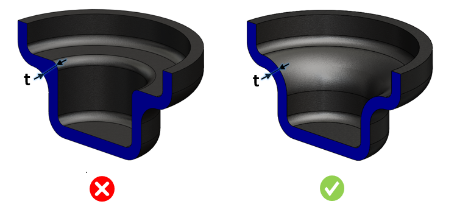

砂型鋳造部品における名目肉厚に対する肉厚の変動は、許容される公差範囲内である必要があります。
極端に薄い部位や厚肉部は、重大な鋳造不良につながります。鋳物の断面肉厚は、巣やポロシティなどの問題を防ぐために均一である必要があります。厚肉部は薄肉部に比べて冷却に時間がかかることが多くなります。肉厚の変動を許容範囲内に保つことで、熱応力や残留応力を低減できます。
名目肉厚より薄く、かつ許容される変動率の範囲外にある肉厚は、最小肉厚条件として不合格となります。
最大肉厚条件では、名目肉厚より厚く、かつ許容される変動率の範囲外にある肉厚は不合格となります。
一般的なガイドラインでは、肉厚の変動は許容範囲内に収めることが推奨されます。
DFMPro は面間の肉厚を検証し、肉厚の変動が設定された公差範囲内に収まっていることを確認します。

ここでは、
t = 名目肉厚